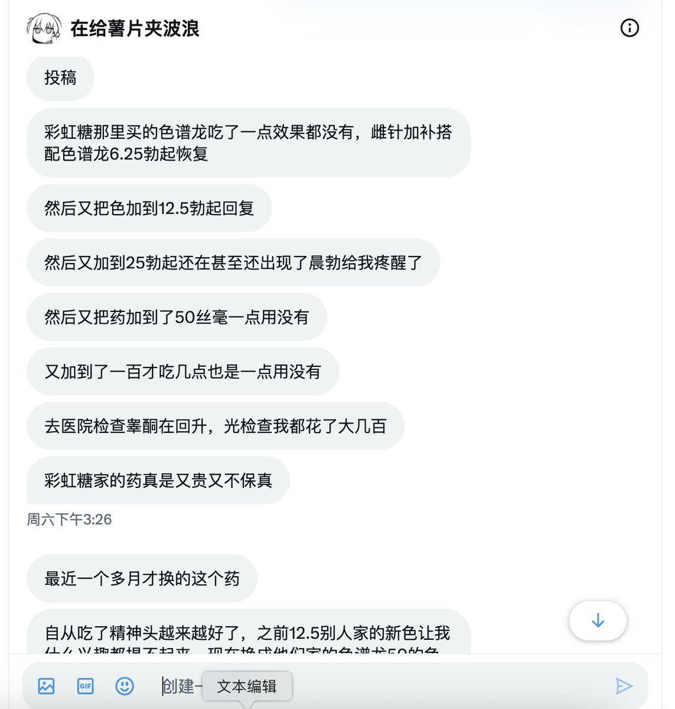
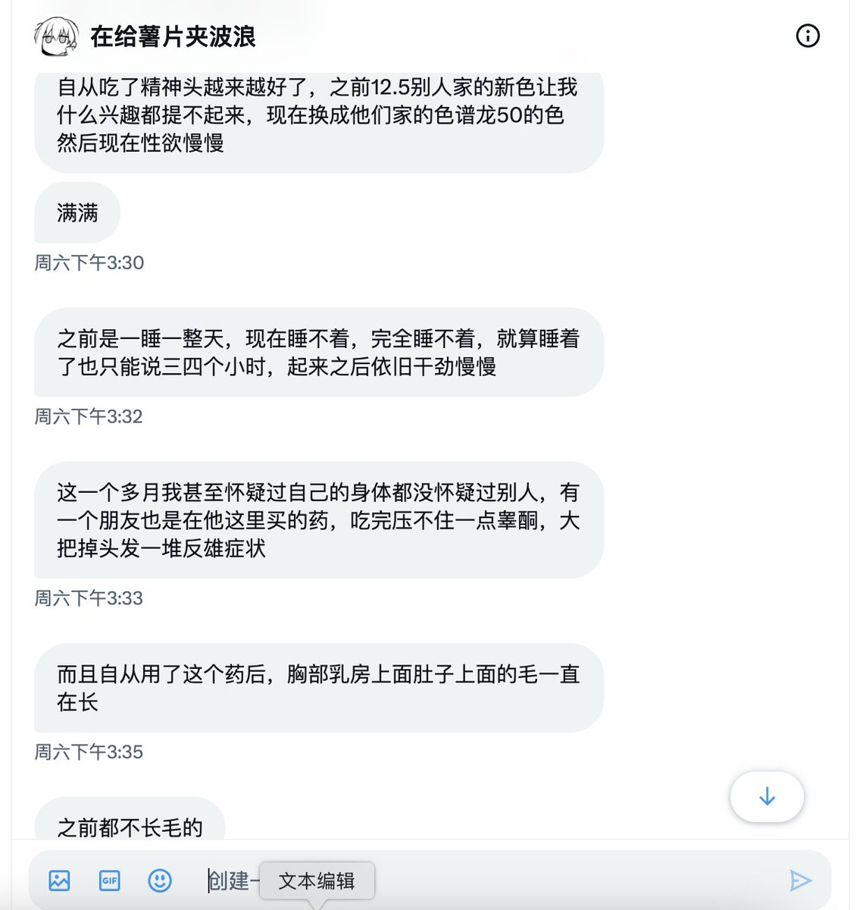
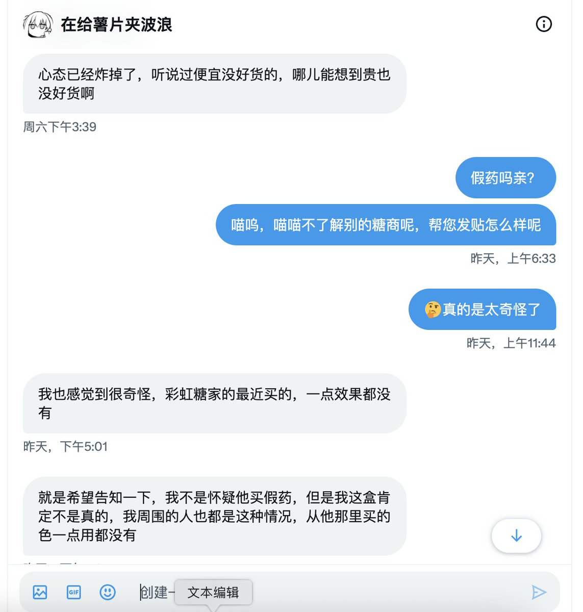

ʟᴜᴍɪ¹
@lumigj02
他们家啊那正常了，我从来不攻击同行，除了他那个傻逼，简直罪行累累罄竹难书



藥娘貓（糖商）🏳️⚧️（邮全球）
@yaoniangmao
投稿人@xiaoxia01056654 称从其他药商处买到假药
喵喵这边并不了解🤔其他药商，出于对客人负责的态度发出这个新闻
有任何其他MTF圈的任何新闻，也可以在喵喵处投稿呢 https://t.co/pmQXyQVROX